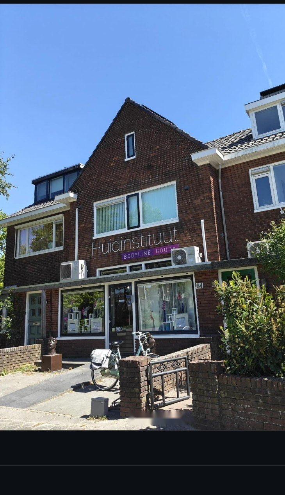
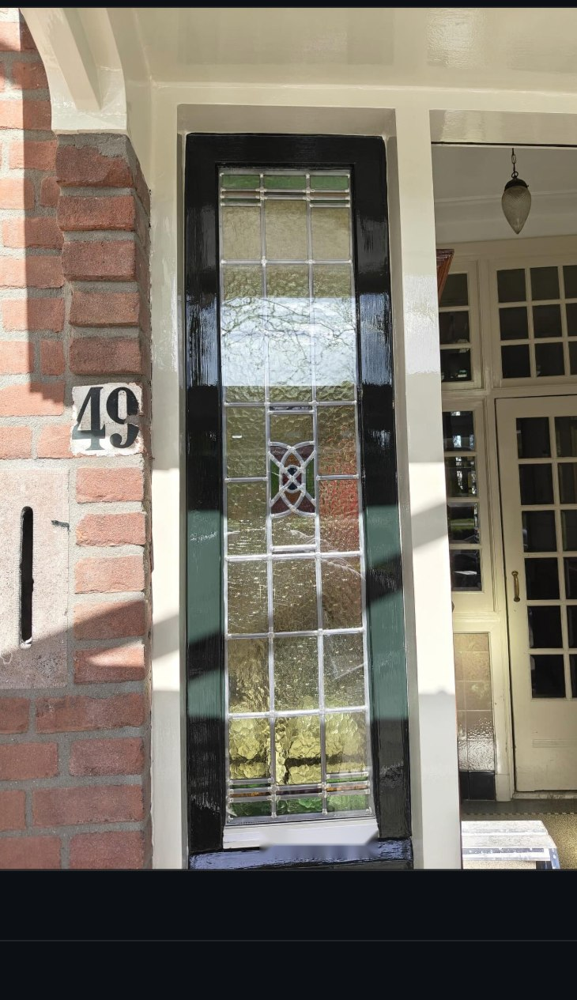
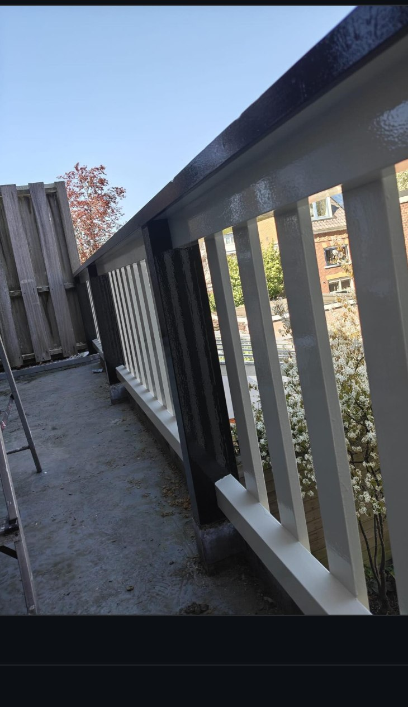
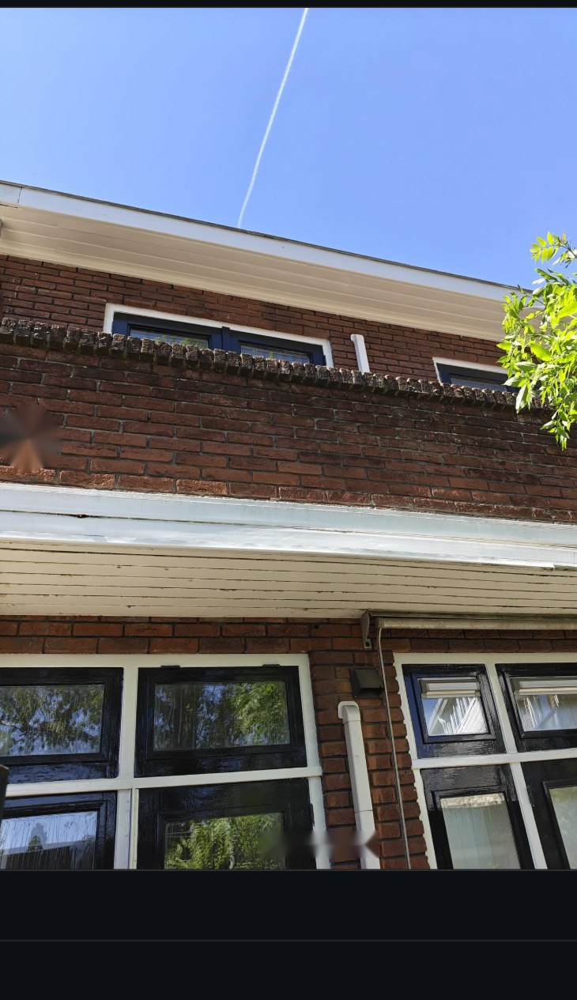
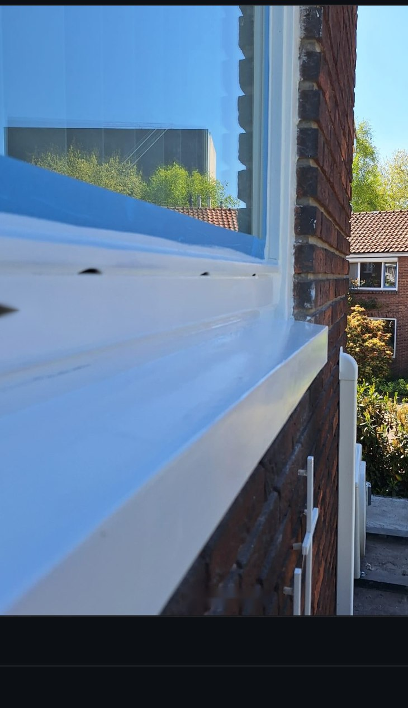
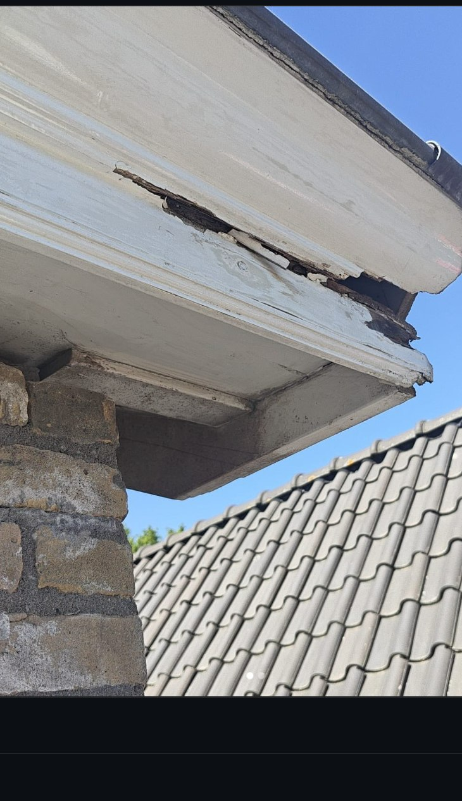

Een greep uit het schilderwerk en de houtrotreparaties die Stefan de afgelopen tijd heeft uitgevoerd, van Gouda tot Delft.






Houtreparatie en schilderwerk aan een kozijn — volledig hersteld en afgewerkt in wit hoogglans.

Een strakke afwerking zit in de details: een zuiver afgekitte naad, een egale hoogglanslaag, een deurkozijn dat perfect aansluit. Dat is waar het verschil wordt gemaakt.